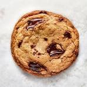

Home
Chocolate Chip Cookies

Chocolate Chip Cookies
Common cookie ingredients include flour, sugar (white and brown), butter, eggs, and salt. Leavening agents like
baking soda or baking powder are essential for rise, while vanilla extract enhances flavor. Additional
ingredients like chocolate chips, nuts, or other flavorings are used to create different types of cookies.
Essential ingredients
- Flour:
The main structural component. All-purpose flour is a common choice.
- Sugar:
Provides sweetness and can affect texture. Recipes often use a combination of granulated (white) sugar and
brown sugar.
- Butter:
Adds richness, moisture, and flavor. It can be softened or melted depending on the desired cookie texture.
- Eggs:
Act as a binder and add moisture. An extra egg yolk can increase chewiness and richness.
- Leavening agents:
Baking soda and/or baking powder help the cookies rise and spread.
- Salt:
Enhances the overall flavor of the cookie.
- Vanilla extract:
Boosts the flavor profile.
Common additions
- Chocolate chips: A very popular addition for chocolate chip cookies.
- Nuts: Chopped nuts like walnuts or pecans can be added for extra texture and flavor.
- Other flavorings: This can include things like pudding mix, sprinkles, or spices.